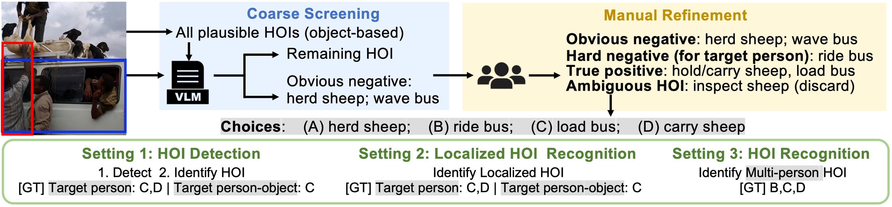
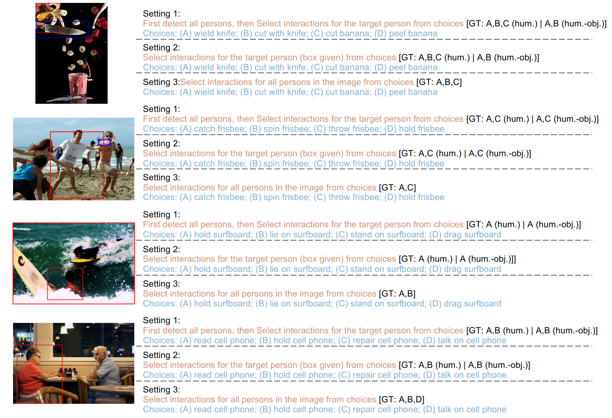
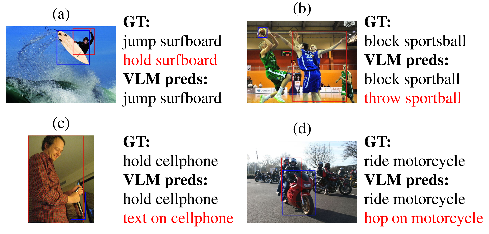
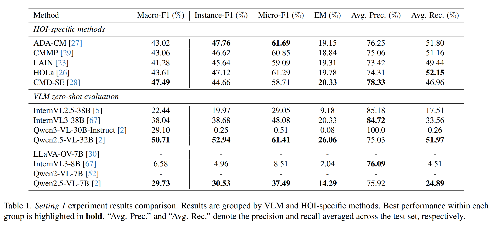
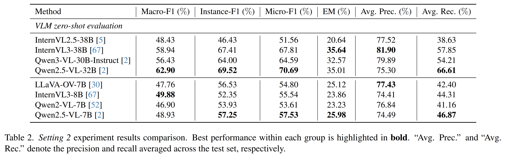
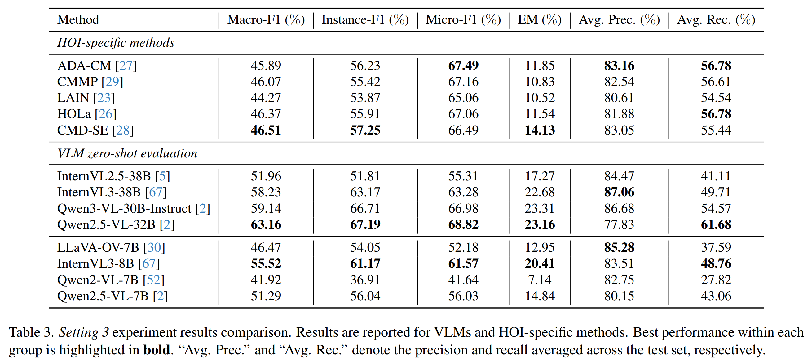

Human-object interaction (HOI) detection has traditionally been addressed using task-specific models, sometimes augmented by early vision-language models such as CLIP. With the emergence of large, generative VLMs, a natural question arises: can standalone VLMs perform HOI detection effectively, and how do they compare to specialized HOI methods? Existing benchmarks like HICO-DET rely on exact label matching under incomplete annotations, counting any unmatched prediction as wrong. This leads to incorrect penalization, especially for VLMs whose outputs are less constrained, making fair comparison between the two paradigms difficult.
To address this limitation, we introduce a multi-choice HOI benchmark with explicitly defined positives and curated negatives, enabling unified and correct evaluation of both VLMs and HOI-specific models. We further focus on challenging scenarios, such as multi-person scenes and fine-grained interaction distinctions, which are crucial for revealing real differences between the two paradigms.
Experiments show that large VLMs achieve competitive, sometimes superior, zero-shot performance, yet they struggle with multiple concurrent actions and with correctly assigning interactions to the target person. Conversely, HOI-specific methods remain weaker in general HOI reasoning but demonstrate stronger multi-action recognition and more reliable identification of which person performs which action. These findings expose complementary strengths and weaknesses of VLMs and HOI-specific methods, which existing benchmarks fail to reveal due to incorrect penalization.

Overview of our HOI benchmark construction. Input image undergoes coarse screening and manual refinement to produce a four-choice question, followed by evaluation under three settings.

Example questions in our benchmark under the three evaluation setting
Illustration of VLM (Qwen2.5-VL-32B) failure cases in Setting 1, and red HOI classes refer to missing ground-truth interactions or incorrect predictions. The VLM mainly suffers from (a) incomplete multi-action recognition, (b) cross-person HOI misattribution, (c) HOI similarity confusion and (d) hallucination.

Here are critical experiment results in three evaluation settings. Setting1: HOI detection, where the model needs to detect all HOIs in the image. Setting2: Localized HOI recognition, where the model needs to recognize HOIs for a specific person. Setting3: HOI recognition, where the model needs to recognize all HOIs in the image without localization.



Large VLMs achieve surprisingly competitive zero-shot HOI performance.
HOI-specific models remain stronger in localization and multi-action recognition.
Nevertheless, both paradigms still struggle with cross-person attribution and semantically similar HOI distinctions.
@inproceedings{lei2026crosshoibench,
title = {CrossHOI-Bench: A Unified Benchmark for HOI Evaluation across Vision-Language Models and HOI-Specific Methods},
author = {Lei, Qinqian and Wang, Bo and Robby T., Tan},
booktitle = In Proceedings of the IEEE/CVF computer vision and pattern recognition (CVPR),
year = {2026}
}